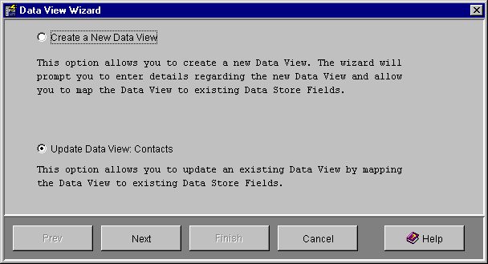
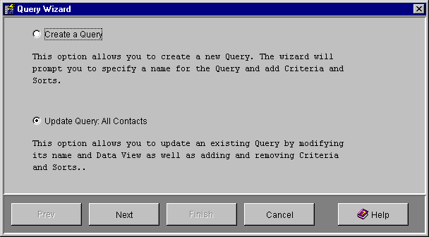

The Views and Queries screen allows you to create and maintain Views and Queries for Mobile Data Now.
The Views are displayed in a tree with views grouped by the Data Stores that they access. A view contains queries and view fields.
Double click on a data store or view to expand or collapse it in the tree.
The Views and Queries screen has the following buttons:
View Wizard
Query Wizard
Direct SQL
Delete
Properties
Set Naming
Execute Query
A View is a set of fields from related Data Store tables that can be selected and presented to the mobile user. A View belongs to single Data Store and a Data Store may contain many Views. The reason that we have Views instead of just presenting the mobile user access to Data Store tables is so: (a) a View may contain a subset of the fields from a single Data Store table or (b) a View may contain fields from more than one related table and therefore hide from the mobile user that data is coming from more than one table.
Note that it may be necessary for a view to contain all key fields from all the
entities used by the view. This is a requirement only if you wish the users to
be able to insert new records. This is because it is necessary to fill in the
key fields when inserting and if they are not present in the view the user
cannot fill in the values.
If the underlying database is using triggers or auto-number fields to generate
the keys then it is not necessary for them to be included in the view and if
they are fields that are generated by the database should be made read-only.
The figure above shows an example MDN system. At the top level the tree contains the Data Stores available in this example MDN system. Beneath each Data Store are the Views that have been created for that Data Store. Beneath the Views are firstly the Queries that belong to that View and then the View Fields that make up that View.
The View Wizard is used to create and Maintain Views. Press the View Wizard button on the Maintain Views and Queries screen to open the View Wizard.

You are able to choose to create a new View or update an existing View from the
initial View Wizard screen. The update option will only be available if
a view was selected when the View Wizard button was pressed.
Pressing Next takes you to the View Properties wizard panel.
View Properties Wizard Panel

A View has a Name that uniquely identifies it within a Data Store.
When creating a new view you must also select the Data Store that the
View is to belongs to. When updating a view the data store cannot be changed.
Pressing Next takes you to the View Fields wizard panel.

This screen allows you to specify the fields that belong to a View. Choose an entity (table) from the Data Store Entity combo box on the top-left of the screen and the fields that belong to that entity will be displayed in the Available Fields list below.
Select one or more fields from the Available Fields list and press the >> button to add them to Mapped Fields list for this View. You may repeat this operation for other tables to add fields from other tables to the view. Note that if you add fields from multiple tables the tables should be related (see the Data Store Relationships screen).
Similarly selecting a mapped field and pressing the << button will remove the mapping.
Selecting a mapped field and press the Set Naming button to mark the selected field as a naming field. This has the same effect as using the Naming Field check box in the View Field Properties screen. The view field icon will display a tick symbol when it has been selected as a naming field.
Pressing Finish will complete the update or creation of the View.
You may edit the properties of a View by selecting it in the tree and clicking the Properties button. This displays the view properties in an OK-Cancel panel.

A View has a Name that uniquely identifies it for a Data Store. The Data Store combo box define which Data Store the View belongs to. This may not be changed once the view has been created.
You may edit the properties of a View Field by selecting it in the tree and Pressing the Properties button to display the field properties in an OK-Cancel panel.

Name uniquely identifies the field within the View and is read-only.
Description allows you to enter a description for the field.
Display Name is the label that is shown before the field when displaying
the record to a mobile user. Due to screen size constraints it makes sense to
make this name as small as possible. It defaults to the Name of the field.
The Naming Field flag identifies the field (or fields, it is valid for a
view to have more than one naming field) that will be used to
name a record selected from this view. When the mobile user executes a query for
this View, the items in the list of records that is returned will be identified
by this or these naming fields.
You may delete a View, Field or Query by selecting it in the tree and pressing the Delete button.
Pressing the Properties button will display the appropriate properties screen or wizard for the item currently selected in the tree.
If a View is selected the View Properties screen
will be displayed.
If a View Field is selected the
View Field Properties screen will be
displayed.
If a Query is selected the Query Wizard
will be displayed.
If a view field is selected pressing the Set Naming button will toggle the naming status of the field. This has the same effect as using the Naming Field check box in the View Field Properties screen. The view field icon will display a tick symbol when it has been selected as a naming field.
A Query belongs to a View and selects records from that view based on user-defined criteria. Queries may specify user-input, be sorted and also grouped.
The figure at the top of this page shows a list of queries (yellow ? icon) belonging to the Contacts view of the Northwind Data Store.
The Query Wizard is used to create and maintain Queries. Press the Query Wizard button in the Maintain Views and Queries screen to display the Query Wizard.

You are able to choose to create a new Query or update an existing Query from
the initial Query Wizard screen. The update option is only available if
a query was selected in the tree.
Pressing Next takes you to the Query Properties wizard panel.

A Query has a Name that uniquely identifies it within a View.
Data Store is the data store that this query will reference.
Data View is the view (within the above data store) that this query will
select from.
Description is any additional text to describe the function of the query.
Pressing Next takes you to the Query Criteria wizard panel.

This screen allows you to enter one or more criteria for the Query. A Query with no criteria will select all records from its View. All criteria for the query are displayed in the Criteria list, which will be empty if there are no criteria.
A criterium has a field, an operator and a value. The field is selected from
the Field combo box at the top of the screen. This combo contains a list
of all the fields in the view.
The operator is selected from the Operator combo box. MDN supports many
operators, including =, >, < and LIKE.
The Value field allows you to enter a value for the criterium. You use
this to create criteria like: NAME = John, SALARY > 100000, IQ < 50 etc...
You are also able to specify that a user will input this value by selecting the
User Input radio button instead of the Value radio button. When
you are satisfied that your criterium is correct you add it to the list be
pressing the Add button. You may remove a criterium by selecting it in
the list and Pressing the Remove button.
Pressing Next takes you to the Query Sorts wizard panel.

This screen allows you to enter one or more Sorts for the Query. A Query with no Sorts will order the result selection by no particular field, i.e. the order is determined by the physical order of the records and the characteristics of the source database.
A Sort has a Field and a direction. Sorting is alphabetical based on the field
that you have specified. An Ascending sort will sort from A->Z,
Descending from Z->A.
If you have more than one sort they are applied hierarchically. The first sort
is the primary one, and where there are several records with the same value for
the first sort field, they will be sorted on the second Sort field.
Pressing Next will take you to the Query Grouping wizard panel.

This screen allows you to group your Query by a field in the View. Select the desired field in the Group On combo box or <<None>> if grouping is not required.
When the mobile user executes this Query it will show a unique list of the values of the grouping field. When they click on one of these records it will show them a list of the records that have that value in the grouping field.

A Direct SQL Query is a free-form Query that may be created by the Database
Administrator and include more complex SQL than is supported by MDN Query Wizard.
You create a Direct SQL Query by selecting the Data Store that you wish to
query in the tree and Pressing the Direct SQL button. This opens the
Direct SQL Query screen shown above.
You must choose a Query Name for the Direct SQL and then type the query
you wish to execute in the SQL Query field. When you press the Ok
button the screen will close and create both a new View beneath the selected
Data Store and a New Query beneath the new view.
You are able to execute a Query within MDN Administrator to verify that is
correct and examine the data that it retrieves.
To do this simply select the Query in the Maintain Views and Queries screen and
click the Execute Query button. The following screen will be displayed:

To delete a record from this screen, select it in the table and click the Delete button.